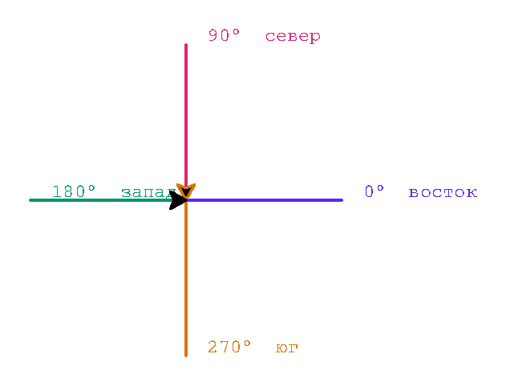

Глава 6 · Рисуем классные вещи с помощью Turtle
Направление и угол
Черепашка может стоять на месте и смотреть в четыре разные стороны — разбираемся, чем курс отличается от позиции.
Важно различать две вещи, которые легко перепутать: позицию черепашки (где она находится) и её курс (куда она смотрит). Черепашка может стоять в одной и той же точке и при этом смотреть в четыре совершенно разные стороны.
Четыре состояния в одной точке
chetyre_napravleniya.py
import turtle
screen = turtle.Screen()
screen.setup(width=480, height=480)
artist = turtle.Turtle()
artist.shape("classic")
artist.speed(0)
artist.penup()
headings = [(0, "восток · 0°"), (90, "север · 90°"), (180, "запад · 180°"), (270, "юг · 270°")]
colors = ["#5B24F9", "#DB2777", "#059669", "#D97706"]
for (angle, label), color in zip(headings, colors):
artist.setheading(angle)
artist.goto(0, 0)
artist.pencolor(color)
artist.pendown()
artist.forward(90)
artist.penup()
artist.write(" " + label, font=("Arial", 11, "normal"))
artist.goto(0, 0)
screen.exitonclick()Результат выполнения

Поворот меняет курс, но не позицию
Вот что происходит с состоянием черепашки при повороте — обратите внимание, что
position не изменилась ни на пиксель:
Состояние черепашки
position(0, 0)
heading0° (восток)
pendown
→ left(90) →
Состояние черепашки
position(0, 0)
heading90° (север)
pendown
Углы из главы 5
Мы уже встречали эти углы в главе 5, когда говорили о тригонометрии и единичной окружности — теперь они управляют направлением черепашки напрямую:
| Угол | Что означает для черепашки |
|---|---|
| 360° | полный оборот — черепашка снова смотрит туда же, откуда начала |
| 180° | разворот — черепашка смотрит строго в противоположную сторону |
| 90° | четверть оборота — прямой угол, курс становится перпендикулярным |
| 45° | половина прямого угла — курс «по диагонали» |
Направление в градусах, начиная с востока
В Turtle 0° — это восток (курс по умолчанию), и градусы растут против часовой стрелки: 90° — север, 180° — запад, 270° — юг. Это тот же принцип, что и на единичной окружности из главы 5.
Практика: направление и состояние черепашки
Модуль turtle открывает нативное окно Python — выполните локально в VS Code, PyCharm или Jupyter
Практика: предскажите курс и координату (без Turtle)
Интерактивный ноутбук прямо в браузере — Python 3.14 через Pyodide, без установки